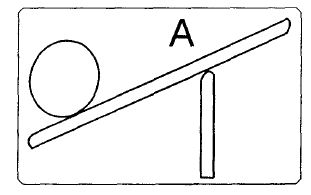

Беседа 2623 от 3877 · Беинса Дуно
Мисълта – изходен път
9 април 1937 г.
Отче наш
Четоха се работи по темата "Най-лесният път".
По какво се отличава лесният път? Все пак, трябва да има едно качество, което да го определя. Кое определя сладчината? Кое определя топлината, кое определя студенината? Топлината разширява телата и дава живот, т. е. тя спомага на живота. Да допуснем, че се намирате в трудно положение и казвате: "Тази работа е безизходна." има ли смисъл в тази работа, която е безизходна? От психологична гледна точка, вие даже не сте дошли до пътя на мисълта, имате само едно чувство в себе си, а си въобразявате, че мислите. Мисълта всякога се отличава с едно качество: щом започнете да мислите, вече има изходен път от мъчнотията. Щом няма изходен път, вие само чувствате; щом има изходен път, вие мислите. Мисълта е процес за разрешаване на всички мъчнотии, но в даден случай тя разрешава най-малко една мъчнотия. Когато се намирате в безизходно положение, щом се обезсърчите, вие не мислите, а чувствате, фантазирате нещо, въобразявате си и казвате: "Толкоз време мислих, нищо не можах да измисля." Нищо не си мислил.
Сега, пътят, който разрешава определена мъчнотия, е най-лесният път. Пътят на мисълта е най-лесният път; всички други пътища са трудни. Ще кажеш, че най-лесният път е Любовта. - Ами че Любовта е мисъл. Ще кажеш, че е Истината. - Това е мисъл. Ще кажеш, че е Знанието. -Това е мисъл. Думата път означава мисъл. Реалното е мисълта. Казва Христос: "Аз съм пътят." - Това е мисъл. Знанието е резултат на мисълта, процес, който разрешава всички мъчнотии. Казвате: "Да мислим." Това е приложение сега. Който и да е от вас, ако се намери в някакво трудно положение и започне да мисли, веднага ще има път.
Сега, вие искате да знаете дали мислите, или чувствате. Неразположен си - това е чувстване, не учиш - това е чувстване, потриваш се - това е чувстване, искаш да живееш охолен живот - това е чувстване, искаш да станеш големец - това е чувстване. Когато седиш и нищо не работиш, това е чувстване. Започнеш ли да работиш, ти вече вземаш първия тон на музиката, за да пееш, и тогава вече има мисъл. Именно в мисълта има процес.
Кой е органът на човешката мисъл? Можеш ли да говориш, ако нямаш език? Ако имаш хубаво ухо, това вече показва, че мислиш, а ако само усещаш нещата, ти имаш чувстване. Слухът е, който ръководи сетивата на човека и определя техните качества. Казвам: трябва да упражнявате ухото си. Две неща определят качествата на ума - човешкото ухо и чело. А пък носът определя това, което умът вече е извършил. Това, че носът ви е широк или къс, или гърбав, показва в какво направление се е придвижила вашата мисъл.
Според тази теория, чувствата са едно заведение, една фабрика, в която човешките мисли се обличат. С други думи, чрез чувствата вие произвеждате дрехи на вашите мисли, за да ги обличате. Всяка една мисъл трябва да се облече и чувствата се явяват като нещо, чрез което мислите се реализират и имат материал, с който да работят.
Най-лесният път е пътят на мисълта. Мислите ли, че пътят, по който Слънцето върви, е най-лесният? Можем ли ние да ходим по неговия път? Невъзможно е. Мислите ли, че пътят на звездите е най-лесният? Невъзможно е да вървим по този път. Ние мислим, че пътят на Любовта е най-лесният. И в него не можем да ходим - той е много труден път, там се иска жертва. Пътят на Любовта е пътят на мъдрите. Любовта не е за слабите, не е за глупавите хора. Любовта е достояние само за най-умните хора, а другите се хранят от трошиците на Любовта. Всички същества запазват нещо от нея и се хранят от трошиците, защото тя доста изобилно дава.
Сега, вие трябва да имате една правилна мисъл, защото в нея няма противоречие. Когато мисълта е права, няма противоречие. Щом има противоречие, вътре в нашето разбиране има нещо. Мисли, право мисли! Нали сте пели песента "мисли, право мисли."
Сега, задайте един въпрос, който човек трябва правилно да разреши. Кой е най-важният въпрос в живота на човека сега? Какво трябва да прави човек - да седи ли, да ходи ли, да мисли ли? Кое от кое произтича? Седенето произтича от ходенето, а ходенето произтича от мисълта. Не можеш да седнеш някъде, докато не си ходил; не може да ходиш, докато не си мислил. Например, казваш: "аз ходих някъде." Не можеш да ходиш, докато не си мислил. Друг пък казва: "Не мога да седя." Това значи, че не си мислил, а си имал само чувстване. Ето къде е самоизмамата.
Разказваха за един човек от Свищов, който обичал парите и дълго се молил на Господа да му помогне да спечели сто-двеста хиляди лева по който и да е начин. Една вечер някакъв му се явява насън, казва, че молитвите му са чути, и му дава една торба със злато. Той я хваща и си казва: "Оправих си вече работите!" В това време се явява една крава и започва да се върти около него. Казал си: "Откъде се взе тази крава да се върти около мен и да не ми дава да изляза!" Понечил да я ритне и да си върви с парите по пътя, но в същото време почувствувал нещо студено по лицето си... Всъщност какво станало: когато си лягал вечерта, сложил на масата до леглото едно шише с вода. И когато ритнал кравата насън и си казал: "Отървах се от нея!", той всъщност ритнал масата, тя се обърнала и шишето с вода се изляло върху него. А "торбата", която държал, била покривката на масата, но парите ги нямало.
Та казвам: същественото е мисълта. Торбата, парите, всички тия работи отвън са чувствания, а същественото е мисълта. Всички хора в света все носят торби, в които нищо няма, а кравата, с която се занимават, е обърната с краката нагоре маса. По някой път и вие ритате вашите крави. Законът е много прав: кравата се върти, а той иска да излезе. Нека и той да вземе и да се върти заедно с нея. Защо кравата се върти? - мисълта образува движение. Кравата иска да му каже: "Можеш ли да се въртиш? Какво ще правиш с тия пари?" щом човек дойде на земята, кравата започва да се върти около него. Тази крава е Животът. Виждате ли колко интересен е този сън. Щом се родиш, кравата започва да се върти около теб и ти се чудиш какво да правиш с нея. Ако не разбираш законите, ти ще я ритнеш и ще ти остане само празната торба, а мисълта и знанието ще си отлетят.
Сега, нали купихте лотариен билет, колко спечелихте? -Четиристотин лева...
Мисълта е потребна в живота. При сегашните условия на живота вие се намирате в завършека на една епоха, както в края на една учебна година. Тази епоха е към края си и сега остава да държите само матура. Учебният материалът почти е преминат, остава само някои да държат малък изпит, а някои - матура. Сега се чудите какво ще стане с вас? - Ще държите матура. Някои от вас ще държат изпит за забавачница, някои - за отделения, други - за прогимназия, гимназия, а някои - за университет. Зависи от това как сте учили. Сега имате да държите изпит в университета.
Представете си, че имате [2'2 3'2, 4'2]. Две на квадрат е четири и така геометрически се образува квадратът, т. е. имате вече една фигура. Три на квадрат е девет, четири на квадрат е шестнадесет. Каква геометрична фигура представлява [4'2]? Това е фигура, която не може да се представи. Но по закона на аналогиите нека вземем числото 2, което представлява една права линия. Правата може ли да се продължи безконечно? Виждаме, че не може да се продължи, а трябва да се пречупи.Така получаваме четириъгълник или квадрат, който е цял свят, а местата на пречупване са видоизменението на този свят. Едно същество може да обиколи квадрата. По-нататък имаме по-висши измерения. Когато предполагаме една дълга линия в пространството, ние даже не знаем в каква посока тя може да се проектира - може да е граница на една плоскост. Ако говорим за плоскостта, може да е граница на едно тяло. Едно тяло може да е граница на друго нещо...
Сега вие чувствате нещата. Щом се намерите в дадено затруднение, вие вече не мислите, а чувствате мъчнотията и казвате: "Не зная." Незнанието показва, че само чувстваш нещата, но не мислиш. Щом мислиш, ти вече ще знаеш.
Например, имате една идея за Доброто. Какво нещо е то? Казваме, че един човек е добър, а друг е лош. По какво се отличава добрият от лошия човек? Сега вие пак чувствате, а не мислите - чувствувате, че можете да дадете неправилен отговор, и си казвате: "Може да направя една погрешка." Това е чувстване. Щом си раздвоен в себе си, ти не мислиш. Раздвоението е процес на чувствата - в чувствата ние се раздвояваме. Мисълта пък е активността. Шивачът, който с една мярка мери нещата, можеш ли да го раздвоиш? Той сам си подразделя мярката. Съвременният метър има подразделения, но мярката му, приета за единица, не се дели. При това положение има нещо, което може да функционира в дадения случай - ти вземаш нещо в съображение, мериш. Когато нямаш мярка, ти чувстваш, че имаш нужда от един метър, но не знаеш как да го намериш и в това е мъчнотията. А шивачът те пита колко дълга, колко широка искаш да бъде дрехата, колко дълги искаш да бъдат ръкавите. Следователно тук вече има мисъл. Щом знаеш един занаят, ти вече имаш мисъл и работата върви. Когато не знаеш занаята, ти само чувстваш.
Например, мислиш, че знаеш нещо от окултизма, но и това е чувстване. Гледам, че много автори са написали цели книги по окултизъм, но те само са чувствали нещата, предали са ги като новелист или романист, който описва живота. Наскоро един познат ми каза: "Бях си поставил за цел да разбирам живота според романите, които бях чел, но той не излезе такъв, какъвто е описан, съвсем друг излезе на опит." Хората, които са правили тая литература, не са писали с мисъл и не са дали разрешение на това, което са преживели и знаят. Например, вие искате да обичате някого. Но в Любовта има разрешение, а това, че се обичат двама, ни най-малко не е разрешение, а е оплитане. Така е: когато двама само се познават, не се сърдят, но щом се обикнат, започват вече да се сърдят -оплитат се, не са свободни. Някой казва: "Да се обичаме." Това значи да си туриш беля на главата. Срещнеш го на пътя и ако не го поздравиш, веднага се докача; идва при теб и ако не си му направил услуга, пак се докача. В такава любов няма смисъл. Всички подобни положения показват, че тази любов не е онази любов на мисълта, която разрешава мъчнотиите, а само ги оплита. Така ти се оказваш в едно противоречие и казваш: "Не си струва човек да обича." Оплел си се вече - само чувствуваш, въобразяваш си, че обичаш. Другото положение е, когато някой се дави в реката, ти да го извадиш, да му кажеш: "Друг път не влизай дълбоко във водата, влизай най-много до колене", да го пратиш да си върви по работата и да не го видиш вече. Този човек ще каже: "един господин ме спаси, на него дължа живота си - не му зная името, но господ да му дава здраве!"
Сега, понякога казвате, че учите, а не помните нищо. Вие чувствате, затова не помните. Слабата памет при някои от вас се дължи на това, че чувствувате нещата. Разбира се и чувстването спомага за паметта. Но паметта е една способност, която чувствата объркват, т. е. щом чувствуваш, не можеш да помниш. А щом започнеш да мислиш, паметта идва. Можеш да запомниш само това, за което мислиш; нещо, което чувствуваш, не можеш да го помниш. Например, имаш един усет, но каква му е формата? - Няма я. Само мисълта дава определена форма на Живота.
Има и други положения, когато казвате: "Не ми върви!" - Защото не мислиш. - "Не зная да работя." - Не мислиш добре. - "Приятели нямам." - Не мислиш. - "Не съм добър човек." - Не мислиш. - "Не зная какво да правя." - Не мислиш. Щом започнеш да мислиш, ще знаеш и ще имаш един изходен път. Та казвам сега: тепърва трябва да намерим своя път. Вие сте хванали най-мъчния път - някой хванал любов, друг хванал богатство, трети хванал сила...

Сега, вие искате да разрешите някои въпроси със сила. Например, казвате: "Трябва да набием този човек." Мислите ли, че ако набиете някого, можете да го оправите? Мислите ли, че като кажете: "Аз съм невежа, нищо не разбирам", с това ще разрешите нещо? Мислиш, че като кажеш това, работата ще се оправи. Ти не си започнал да мислиш. Същото е, когато кажеш: "Аз съм много лош човек." Това не разрешава въпроса. - "Аз съм много добър човек." - И това не разрешава въпроса. Тези неща са относителни. Че си много добър, означава, че вече мислиш, че имаш една мярка, която трябва да приложиш. Човек, който мисли, гледа трезво. Той е турил всичките си сетива в изправност - в него функционира и зрението, и слухът, и обонянието, и вкусът, и осезанието. Функционират и всички други чувства. Какво ти трябва, за да вървиш? За да учиш музика и поезия, трябва ти слух. За да придобиваш Живот, трябва ти нос, т. е. трябва да дишаш. Чрез носа се добива Живота, чрез ухото се добива Знанието, чрез устата се добиват елементите на Живота, а чрез носа Животът се туря в действие. Сетивата са пътищата, по които човешката душа се проявява.
Да допуснем, че се намирате в една мъчнотия; с какво ще започнете? Какво е предназначението на терцата в музиката? Основният тон, с който Животът вече е започнал да функционира, е до. Терцата ми е появяването на човешката мисъл, т. е. основата на Живота. Нали този е бил основният тон в музиката на египтяните. Ако можеш да вземеш тази терца правилно, мисълта вече сама по себе си идва. Освен терци, имате кварти, квинти, но според сегашната теория на музиката, какво е предназначението на терцата? В съвременната музика имате основен тон до - това е почивката, после имате ре - това е движението, накрая имате ми - това е мисълта. Те всички са съединени.
Казвам: трябва да започнете от усещанията на сетивата. Вземете един прост пример в живота: ако турите ръката си близо до печката, веднага, без да мислите ще направите едно движение, а мисълта започва да действа отпосле. Първо имате усещане, което е едно неподвижно състояние; после веднага си задвижвате ръката и ако изгарянето е голямо, явява се болка и вие започвате да мислите как да намерите цяр и да го намажете. Когато намажете изгореното място, явява се мисълта и човек започва да мисли. И така, най-първо имате състояние на покой; за да излезете от него, вие си туряте ръката да опитате топлината; после дърпате ръката си; най-после, когато започнете да лекувате пръстите си, се явява мисълта.
Например, ние сме в трудно положение и имаме неразположение на духа. Ако взема до-ре-ми или ако взема до и ми в акорд, моето състояние веднага ще се измени. Ако се измени, това означава, че аз мисля; ако не се измени, мисълта не се е явила. Мисълта дава разрешение. Мисълта е най-лесният път, който разрешава поне една мъчнотия.
Сега, ние казваме: "Тази е философска работа." Във философията също има много чувствания. Философите, които разискват върху нещата, нямат много дълбока мисъл и си фантазират неща, които не са верни. Например, говорят за Абсолютното, което е една неразбрана работа. Когато говори за Абсолютното, философът няма мисъл, а само чувства нещата и казва: "Абсолютното - онова неизмеримото." Какво означава Абсолютното и можем ли да кажем, че непостижимите неща са неразбрани? Има една максима: само за неразбраните неща можем да мислим, за разбраните никой не мисли. А според сегашните определения можем да мислим само за разбраните неща, а за неразбраните не можем да мислим. Според вас кой мисли - ситият или гладният? - Гладният, разбира се. Ситият въобще не мисли, той чувства в себе си, че е задоволен. А гладният търси. И животното има една малка мисъл, която идва само когато е гладно; наяде ли се, насити ли се, то си ляга, полага си главата и отива в другия свят, при което с мисълта му се свършва. Моментът на мисълта у животното е кратък - докато е гладно. И вълкът, когато огладнее хубаво, започва да си търси храна и казва: "В Драганово има кошара, в Петканово има друга кошара." При това положение вълкът вече мисли, помни и започва да си избира. После, взема предвид има или няма кучета там. Накрая вълкът отива и ако е мислил добре, успява да задигне някоя овца, но ако не е мислил добре, кучетата го завардват.
Сега, да оставим въпроса дали вълкът мисли или не, защото можем да влезем в противоречие. Аз не бих желал да мислите като вълка. Елементарна и толкоз изопачена е неговата мисъл, че щом намери много овце заедно, започва да ги прави на пастърма. Вълкът мисли като касапин и издавя наведнъж десет, петнадесет, двадесет овце. Логично е да вземе една и да я изяде, защото не е търговец, та да търгува с тях. Но вълкът чувства, че овцете ще му служат дълго време за храна, което е негово заблуждение. Понякога и вие мислите като вълка и искате да се осигурите.
Толстой описва как слугите на един богат човек поръчали на майстор-обущар да скрои ботуши за господаря им. Майсторът дал на чирака си да ги ушие, но последният, наместо да скрои ботуши, скроил чехли за погребение и започнал да ги шие. Явно, чиракът си помислил, че на богатия няма да му трябват ботуши. Не се минават няколко часа, идва един слуга и казва да не кроят ботуши, ами чехли за погребение, понеже господарят им умрял... Казвам: не си кройте ботуши, защото не знаете кои от вашите желания ще оцелеят. На желанието не му трябват ботуши.
Сега, можете да вземете всичко това и обратно. Едно желание и една мисъл са ти достатъчни. Човек не се нуждае от две неща, а трябва да има едно желание и една мисъл. Другите работи сами по себе си ще дойдат. Ние, хората, сме желания. А когато започнем да мислим, това вече не е човек. Бог е първата мисъл, която идва в ума и дава разрешение. Запомнете: за мен първата мисъл е Бог. Какво нещо е Бог? - първото нещо, което осмисля живота ми, разрешава една от мъчнотиите и показва пътя. Започна ли да мисля, това е Бог. Аз мога да мисля с Бога, а със себе си мога да страдам. Тъй схващам аз нещата и по този начин въпросите лесно се разрешават. Не ги разрешавам аз - аз само ги чувствам, а друг ги разрешава. Аз разрешавам въпросите като мисля, но първата, основната мисъл е Бог. Най-лесният път е мисълта за Бога. Тъй, както сега мислим, това е чувстване, предполагане, а не е мисъл. Казвате за нещо: "Аз ще ти го докажа." Оставете доказателствата! Защо ще ми доказвате, например, какво нещо е светлината, след като аз имам собствени доказателства още преди да ми излагат други. Светлината е спомагателно средство, а мисълта ръководи целия човешки живот.
Ще ви дам една максима: вие мислите, че сте мислили, но много малко мислите, а само чувствате. Вие седите и чувствате за себе си, а за Бога още не сте мислили. Той е една светла мисъл и щом дойде, веднага показва целия път, по който трябва да вървите. И целият ви живот става сносен и приятен дори при най-големите мъчнотии и несгоди. Тогава, ако сте студент по даден предмет, приятно ти е да го изучаваш; ако си музикант, приятно ти е да пееш; навсякъде ти е приятно да работиш.
Сега, това разбиране за мисленето ще го държите за себе си. Някой може да каже: "Тогава какво сме правили досега?" - Само сте почивали и сте гледали... Та казвам: две неща ви са потребни - едно чувство и една мисъл. Чувството е човекът, мисълта е Бог.
Следователно, трябва да имате една ясна представа за себе си. Ако можете да намерите нещо по-хубаво от това, турете го и него в пътя си. От много глава не боли.
Само светлият път на Мъдростта води към Истината. В Истината е скрит Животът.
19-а лекция от Учителя,
държана пред Младежкия окултен клас
9 април 1937 г., петък, 5 ч.с, София, Изгрев